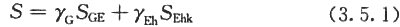
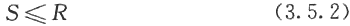

3．5 建筑机电工程设施和支吊架抗震要求
3．5．1 建筑机电工程设施的地震作用效应(包括自身重力产生的效应和支座相对位移产生的效应)和其他荷载效应的基本组合，应按下式计算：

式中：S——机电工程设施或构件内力组合的设计值，包括组合的弯矩、轴向力和剪力设计值；
γG——重力荷载分项系数，一般情况取1．2；
γEh——水平地震作用分项系数，取1．3；
SGE——重力荷载代表值的效应；
SEhk——水平地震作用标准值的效应。
3．5．2 建筑机电工程设施构件抗震验算时，摩擦力不得作为抵抗地震作用的抗力；承载力抗震调整系数，可采用1．0，并应满足下式要求：

式中：R——构件承载力设计值。
3．5．3 建筑物内的高位水箱应与所在结构可靠连接，8度及8度以上时，结构设计应考虑高位水箱对结构体系产生的附加地震作用效应。
3．5．4 在设防烈度地震作用下需要连续工作的建筑机电工程设施，其支吊架应能保证设施正常工作，重量较大的设备宜设置在结构地震反应较小的部位；相关部位的结构构件应采取相应的加强措施。
3．5．5 需要设防的建筑机电工程设施所承受的不同方向的地震作用应由不同方向的抗震支承来承担，水平方向的地震作用应由两个不同方向的抗震支承来承担。